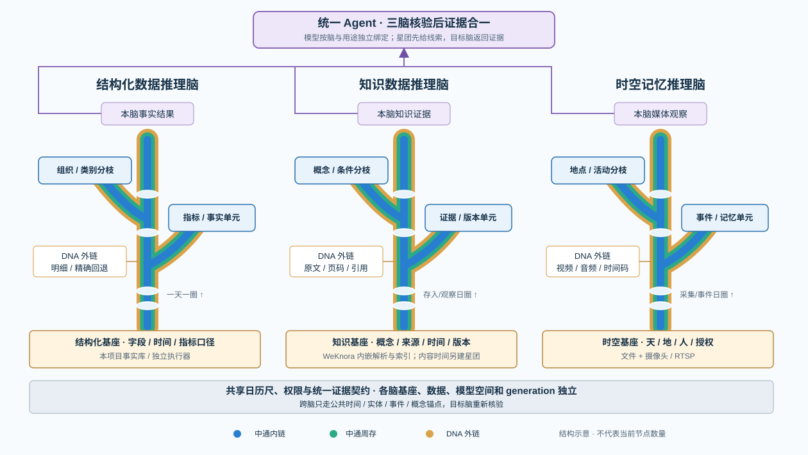
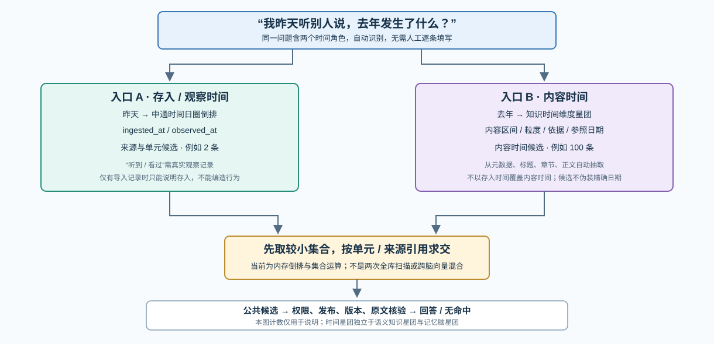
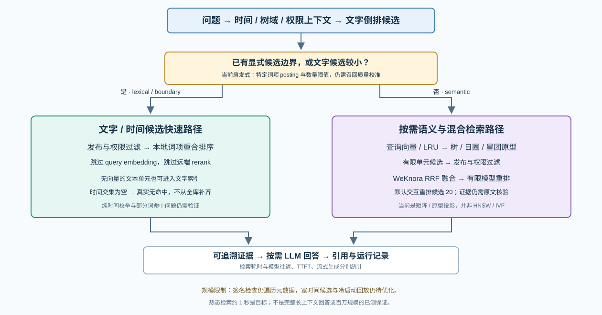

PRODUCT AND TECHNOLOGY BLUEPRINT · V3.4
链式多维时空知识库引擎
以统一智慧树认知拓扑连接多模态时空记忆、知识认知与结构化数据推理。三脑采用同尺多轴的时间主干，每天一圈；所有向量先进入留痕层，再由记忆星团（特征共振索引）自动形成跨时间的快速回忆通道。
第一部分：产品定位与设计原则
1.1 目标问题
现有系统通常把结构化业务数据、个人图像视频音频、专业文档知识分别放在互不理解的工具中：表格能算数但不理解自然表达；相册能按时间浏览却难以按事件回忆；知识库能召回文本却难以证明结论来源。链式多维时空知识库引擎的目标，是让这些材料在同一受控入口下可被查询、解释、追溯和组合。
产品定义：三脑不是三个聊天机器人，而是三类具有不同事实来源、查询方式和证据规则的认知执行器。Agent 负责理解、编排和呈现；认知脑负责返回可验证的结果；模型不得越过数据和权限边界自行编造结论。
1.2 三脑分工
| 认知脑 | 核心对象 | 主要价值 | 结果必须附带的证据 |
|---|---|---|---|
| 多模态时空记忆脑 | 图片、视频、音频、文字记录、传感器与时空元数据 | 按某段时间、地点、人物或活动回忆与钻取真实经历 | 媒体片段、采集时间、地点来源、特征版本和权限范围 |
| 知识认知脑 | 文本、PDF、Word、PPT、网页、OCR 与转写材料 | 按概念与语义检索知识，并返回可追溯的解释 | 原文段落、页码/时间码、版本、来源、置信度与冲突状态 |
| 结构化数据推理脑 | Excel、数据库表、通用事实、维表/主数据和指标口径 | 把自然语言转换为标准查询并做精确筛选、分组与聚合 | 数据集、时间范围、标准条件、口径、聚合结果与运行配置档 |
1.3 不可妥协的设计原则
- 同一时间尺、独立智慧树：三脑及脑内每棵树使用一致的日历刻度和日界线，但各有独立时间主干、分枝和数据覆盖范围；不把三脑画成一根公共物理轴。
- 一天一圈：时间是三脑共同主特征。时空脑与知识脑的单个日圈是三维向量集合，结构化数据脑的单个日圈是一维事实序列；时间
T负责排列、定位与反查，不参与记忆星团的聚合主键。 - 向量先留痕、再生长：每个向量先写入时间无关的向量留痕层，记录其空间位置、次数、中心与离散度；达到策略阈值后自动聚类、形成星团并推动中通特征和分枝生长。
- 自动拓扑、人工治理：普通低风险字段角色、共有特征、分枝候选和星团由系统自动生成、更新和重建；用户可查看、修改、拆分、合并、暂停或禁用。权限、高敏感身份/位置、生物特征、不可逆业务口径与跨数据集总量语义仍需策略门禁或明确确认。
- 查询和写入分离：查询读取已激活的拓扑版本；留痕、聚类、生长和规则更新均有版本、阈值事件和可回滚记录，不因日常自动生长阻塞查询。
- 不伪造精度：没有足够的时间粒度、位置依据、证据片段或数值口径时，系统必须披露限制或拒答。
第二部分：三脑总体架构
用户问题、文件或实时媒体先进入统一认知控制面。控制面先将明确时间条件编译为三脑可执行的日历范围，再一分四路：一条进入由向量留痕自动聚合的记忆星团（特征共振索引），另外三条分别进入认知脑。记忆星团不是第四个脑，也不保存原始事实；它以时间无关的向量位置和重复次数建立索引，再通过成员引用反查日圈、树、节点与证据。三脑独立返回后再进行脑内与跨脑合并。
图 1：输入 → 记忆星团与三脑并行 → 脑内合并 → 多脑合一输出
统一认知控制面
输入接入与会话权限、隐私与保留策略模型通道、Skill 与工具编排审计、运行配置档与版本固定多模态时空记忆脑
面向个人生活记忆和时空事件，接入图片、视频、音频、文本记录及合法授权的设备数据。
基座：天、地、人、权限与来源归一
主干：独立时间尺；每日一圈，承载三维时空向量集合
自动生枝：按地点稳定性、动作连续性和向量重复次数形成场景、活动、动作或习惯
外链：媒体片段、关键帧、波形、转写、动作特征
知识认知脑
面向专业知识和可追溯资料，以原文、版本和本体关系作为可发布知识的基础。WeKnora 只作为本脑内部受管运行时，结果经统一证据契约投影到知识智慧树。
基座：领域、本体、概念、版本、来源与置信度
主干：独立时间尺；每日一圈，承载三维概念与证据向量集合
自动生枝：同一嵌入空间的近邻按主题共现、概念稳定性和证据密度自动形成主题、概念、条件与证据类型
外链：原文块、页码、时间码、图表和向量候选
结构化数据推理脑
承接现有 AI 数据引擎，面向受控事实数据、主数据、指标口径和精确计算。
基座：时间、组织、产品、指标、口径和能力翻译
主干：独立时间尺；每日一圈，承载一维事实数据序列
自动生枝：按覆盖率、区分度、层级关系、基数和阈值选择组织、地域、品类、产品或渠道
外链：非共有字段、倒排索引、明细与精确事实回退
脑内合并 → 多脑合一：记忆星团的快速线索与三脑独立结果按证据、时间、口径和权限合并 → 一个统一输出
2.1 当前工程基线与规划范围
独立工程基线结构化数据推理脑与统一平台
引擎、Node Agent 与 CNTS 实现已迁入本项目，本安装独立持有数据、配置与进程。统一后台已有接入、模型、数据集、Agent、图表与拓扑入口。
候选配置须验收CNTS 二进制执行器
保留不可变 generation、Catalog 与人工激活/回切；源码迁入不等于候选配置已在本安装启用。
源码已实现，生产待验收知识脑与时空记忆脑
已有知识 OCR、内嵌 WeKnora、Agent、双时间索引与检索优化；时空脑有文件与摄像头/RTSP 入口。并发、恢复与完整生产后台仍需验收。
第三部分：统一智慧树认知拓扑
智慧树是三脑共用的认知拓扑，不是结构化数据脑专属模型。每棵树都按可靠时间纵向形成独立主干，在容量或语义复杂度达到阈值时按确认维度横向生长。DNA 双链描述数据连接的物理拓扑，不增加一个额外业务查询层。
3.1 同尺多轴，每天一圈
三脑共享同一日历尺与日界线，但不共享一根物理时间轴。每个脑可有多棵智慧树，每棵树都以自己的时间主干连续堆叠日圈；相同日期在不同树内可对齐查询，但树可以拥有不同的数据覆盖、分枝和空白日期。有时间限定的问题先编译为明确范围，再映射到符合权限与能力条件的树；无时间的概念问题可跨日检索授权内容，不要求用户人为补日期。
日圈的载荷不同：多模态时空记忆脑与知识认知脑中，一天是一组三维向量单元；同一特征跨日可保持近似坐标，允许
ε 差异。结构化数据推理脑中，一天是一维事实序列。时间 T 负责把这些日圈排列、对齐和反查，不代表三脑合并为一个球体或一个数据库。图 2：每棵树的单个日圈与分枝节点均具备三层物理空间
中通
DNA 内链
DNA 内链
日圈由内向外：定位 → 摘要/聚合 → 专属证据与下钻
1基座规范化把自然表达翻译为标准时间、地点、人物、概念、数据集、条件或权限参数。
2中通内链进入使用本树的时间主干和稳定共有锚点缩小候选范围，不承载全部字段或全部媒体特征。
3中通周存经过读取日圈内已物化的聚合、摘要、版本状态、事件连续性或外链指针。
4DNA 外链出去按需要读取非共有特征、知识原文、媒体片段、动作序列或精确事实明细。
5结果与证据返回树内先合并，各脑独立返回，再由控制面按口径和证据类型合并，不将异类结果强行相加。
3.2 同一拓扑的三种载荷
| 拓扑层 | 多模态时空记忆脑 | 知识认知脑 | 结构化数据推理脑 |
|---|---|---|---|
| 时间主干 / 日圈 | 同尺独立主干；每个日圈为采集/事件时间下的三维时空向量集合 | 存入/真实观察时间形成进入系统的日圈；案例、发布、生效与修订时间另建有来源的内容时间锚点；未知内容日期不能用导入日代替 | 同尺独立主干；每个日圈为日粒度的一维事实序列；非日粒度数据须声明限制，不得伪装为日数据 |
| 中通内链 | 时间、地点、人物等稳定时空锚点 | 时间版本、领域和稳定概念锚点 | 时间和跨数据集共有稳定特征 |
| 中通周存 | 场景摘要、事件连续性、媒体索引与状态 | 概念版本摘要、证据集合、冲突/发布状态，以及 WeKnora 索引版本、嵌入空间、近邻/重排轨迹投影 | 时间层聚合、指标块、数据集范围和外链指针 |
| DNA 外链 | 原图、视频段、音频、转写、关键点与动作特征 | 原文块、页码、图片、表格、引用关系和向量候选 | 非共有字段、倒排关系、分枝入口和精确事实回退 |
| 聚合上浮 | 事件/场景摘要，不能伪造未观察到的细节 | 证据归并与版本比较，不能伪造学术或业务共识 | 按确定口径的数量、金额、完成率等精确聚合 |
3.3 向量留痕层、自动生长与记忆星团
所有脑产生的向量均先进入向量留痕层，再写入智慧树的日圈、周存和外链。留痕层的聚合身份不包含日期：它仅以向量空间/模型版本、归一化后的空间位置、向量值和出现次数识别同类特征；重复命中只增加次数并更新中心、离散度、密度和稳定度。日期不是星团的组成字段，而由独立的成员引用边 occurrence_id → {tree_id, day_key, node_id, evidence_ref} 保存，用于日后反查“在哪些天、哪棵树、什么证据中出现过”。
自动生长机制：留痕入账后，生长引擎按次数、向量紧密度、稳定性、覆盖范围、区分度、层级关联和策略阈值自动生成共有中通特征、分枝和记忆星团。以“在同一地点持续练太极”为例，地点与连续动作向量持续重复会提高同一空间区域的计数；达到阈值后自动形成“太极”星团及地点 → 活动 → 动作阶段分枝。用户无需逐笔确认，可在之后查看依据、调阈值、拆分、合并、暂停或禁用。
图 3：每个日圈先留痕；时间无关的向量计数自动形成记忆星团，再反查日圈和证据
多模态时空记忆脑
多棵时空智慧树；日圈为三维时空向量集合。
12/0112/0212/03
树 A · 12/01 日圈
地点/场景/动作向量 → 留痕
地点/场景/动作向量 → 留痕
自动：公园 → 太极 → 动作阶段
树 B · 12/03 日圈
近似向量 → 同一星团成员
近似向量 → 同一星团成员
相同日历刻度，独立主干；普通低风险特征自动生长。
知识认知脑
多棵知识智慧树；日圈为三维概念与证据向量集合。
12/0112/0212/03
树 C · 12/01 日圈
概念/条件/版本向量 → 留痕
概念/条件/版本向量 → 留痕
自动：主题 → 概念 → 证据版本
树 D · 12/03 日圈
近似向量 → 同一星团成员
近似向量 → 同一星团成员
星团关联依赖各脑映射契约，不假定原始 XYZ 坐标天然等值。
结构化数据推理脑
多棵数据智慧树；日圈为一维事实序列。
12/0112/0212/03
树 E · 12/01 日圈
字段统计/指标块 → 留痕
字段统计/指标块 → 留痕
自动：组织 → 类别 → 指标
树 F · 12/03 日圈
稳定维度 → 自动分枝
稳定维度 → 自动分枝
数值结果仍按口径精确计算；自动生长不改变事实或指标定义。
3.4 自动主干与分枝生长规则
每棵树的基座：自然语言与多模态输入标准化、权限判断、实体映射
└─ 本树时间主干：2026-10-01 / 一个可靠日圈
├─ 自动共有特征：稳定地点 / 概念 / 数据维度 → 写入中通内链或周存
├─ 自动分枝：地点 → 人物 → 场景 → 活动 → 动作阶段；由重复次数和聚类稳定度驱动
│ └─ DNA 外链：视频段、音频段、关键帧、动作特征序列
├─ 知识分枝：领域 → 概念 → 条件 → 证据来源 → 版本；由主题共现和证据密度驱动
│ └─ DNA 外链：原文块、页码、图表、引用与向量候选
└─ 结构化数据分枝：组织 → 区域 → 类别 → 产品 → 指标；由覆盖率、层级和基数阈值驱动
└─ DNA 外链：精确明细、非共有字段与倒排条件
策略门禁：随机标识、自由文本、未经授权的人脸身份、手机号、精确地址等高敏感或高基数字段禁止自动生长；它们只能保留在受控外链或等待专门授权。
└─ 本树时间主干：2026-10-01 / 一个可靠日圈
├─ 自动共有特征：稳定地点 / 概念 / 数据维度 → 写入中通内链或周存
├─ 自动分枝：地点 → 人物 → 场景 → 活动 → 动作阶段；由重复次数和聚类稳定度驱动
│ └─ DNA 外链：视频段、音频段、关键帧、动作特征序列
├─ 知识分枝：领域 → 概念 → 条件 → 证据来源 → 版本；由主题共现和证据密度驱动
│ └─ DNA 外链：原文块、页码、图表、引用与向量候选
└─ 结构化数据分枝：组织 → 区域 → 类别 → 产品 → 指标；由覆盖率、层级和基数阈值驱动
└─ DNA 外链：精确明细、非共有字段与倒排条件
策略门禁：随机标识、自由文本、未经授权的人脸身份、手机号、精确地址等高敏感或高基数字段禁止自动生长；它们只能保留在受控外链或等待专门授权。
“天、地、人”保持为时空记忆的三基座：天表示时间与环境条件，地表示地点和空间场景，人表示人物与关系。活动、事件、习惯、动作、概念和指标均是由数据特征驱动生长的节点或分枝，而不是第四基座。
3.5 三脑独立智慧树与两种可视化

每脑同时提供两种视图：树形架构原理图呈现基座、向上生长的管状主干、一天一圈、中通内链/周存、DNA 外链、实际分枝与结果输出；来源关系拓扑图呈现文件/数据源、处理模块、门禁、单元、索引、星团与证据引用。普通流程框不能替代树形原理图。
三脑使用同样的展示语义和可读性标准，组件与数据仍可独立拆分。分枝字段数、候选数和实际分枝节点数分开显示；空分枝不补造节点，示意图不冒充生产统计。知识脑继续使用独立拓扑画布，时空脑保留自己的媒体与观察语义。
第四部分：多模态时空记忆脑
多模态时空记忆脑把个人生活记忆作为第一阶段产品能力。它接入图像、视频、音频、文字记录和经授权的设备数据，为每个媒体片段建立可解释的时空记忆单元；不是把所有内容一次性转成文本，也不是把向量相似度当作唯一事实。
4.1 输入与五层记忆管道
图 4：多模态记忆从原始材料、向量留痕到自动生长的可查询记忆单元
1. 安全接入上传、相册授权、摄像头片段、音频、文字与设备元数据
2. 提取向量ASR、OCR、关键帧、场景、对象、波形、姿态与动作片段
3. 天地人归一时间、地点、人物、来源和权限；不确定项保留未知状态
4. 向量留痕与自动生长先记录空间位置和次数，再聚类形成周存摘要、分枝与星团
5. 检索与治理形成日圈、外链证据、自动星团和版本；支持回忆、钻取、纠偏与跨脑查询
4.2 记忆单元与原始媒体分离
| 层 | 保存内容 | 目的 | 禁止行为 |
|---|---|---|---|
| 原始媒体库 | 加密原图、视频、音频和原始元数据 | 证据保全、按权限回放 | 不得把原始文件直接暴露给无权限 Agent 或外部模型 |
| 特征与索引库 | 关键帧、转写、波形摘要、视觉/动作特征、嵌入 | 候选检索和快速定位 | 不得把相似度当作人物、活动或地点的最终事实 |
| 智慧树拓扑 | 时间圈、天地人锚点、分枝、周存摘要和外链指针 | 按时间和稳定特征钻取记忆 | 不得用单个偶然特征污染主干 |
| 记忆发布记录 | 确认状态、提取模型版本、规则版本、操作者和原因 | 可复核、可修正、可回滚 | 不得静默把 AI 推断升级为已确认记忆 |
4.3 自然记忆、习惯与动态生长
系统在已授权数据中自动识别高频稳定模式，例如常见地点序列、时间段或重复活动。每个可靠日圈形成同一坐标语义下的三维时空向量集合；同类特征跨日保持近似位置并允许 ε 差异。每个向量先写入留痕层；当重复次数、紧密度、稳定性和策略条件达标时，系统自动将其升级为可长期路由的中通特征、分枝或记忆星团。用户可查看覆盖样本、置信度、相反样本和影响范围，并可随时修正或撤销，但普通低风险模式不以人工确认为前置条件。
示例：某人长时间在公园持续练太极时，时间与地点先进入日圈和中通内链；动作向量在留痕层持续累加。地点稳定、动作连续且次数达到阈值后，系统自动生长“公园 → 太极 → 动作阶段”分枝并形成对应星团；关键帧、视频片段、音频、姿态关键点和节奏描述仍通过 DNA 外链取回。查询“昨天在哪里看到某人练习某活动”时，系统先定位时间圈，再按自动形成的分枝下钻，最后返回经过权限筛选的证据片段。
4.4 记忆星团（特征共振索引）
记忆星团由留痕层自动形成，而非人工逐项发布。例如“公园打太极”不是重复保存多天的原始视频，而是由近似的动作/场景向量自动聚合出的特征簇。星团本体只保存原型向量、允许偏差、出现次数、中心、离散度、子簇、算法/规则版本和自动生长事件；其成员引用另行保存日圈、树、节点与证据，避免把时间塞入星团的聚合身份。查询“这个月哪些天打过太极”时，先命中星团，再以时间范围过滤成员引用，最后回到各日圈和对应智慧树获取完整证据。
“我记得”的边界：只有自动星团达到当前策略阈值、成员可追溯且当前用户具备访问权限时，系统才可先返回“我记得”的快速线索。低次数、离散度过大或权限不足的命中只能显示为“待核对线索”；星团不替代随后的时空、知识和结构化数据核验。敏感身份、声纹、精确位置等不进入默认自动星团。
4.5 动作特征与未来具身执行
一期支持将动作以可查询、可追溯的结构化描述保存，例如动作段落、关键点序列引用、姿态阶段、方向、节奏、持续时间、置信度、镜头条件和来源时间码。该描述可被知识脑关联到动作规范或注意事项。
明确不在一期执行：动作特征不等于机器人控制代码。人体骨架、机器人自由度、环境约束、碰撞检测、速度限制、校准、仿真验证和紧急停止属于后续具身执行层，必须使用独立安全协议，不得由聊天模型直接下发。
第五部分：知识认知脑
知识认知脑服务于专业资料、个人笔记、规则文档和多模态材料转写后的知识内容。它的目标不止于“检索到文档”：系统须把专业知识沉淀为可引用的事实、概念、规则、适用条件、例外和案例证据，并在问题进入时给出有证据边界的专业分析。它的核心不是“把文档扔进向量库”，而是保留知识的概念结构、版本、来源、适用条件和冲突状态。
5.1 知识导入五层管道
解析抽取文本、表格、页码、标题层级、图片 OCR、音视频转写和媒体时间码。
切分按章节、语义、表格和论点切为可引用知识单元，避免任意截断。
自动标注与生长自动识别候选领域、概念、条件、来源、时间、版本、置信度和关联实体；低风险稳定模式进入留痕并自动生长。
策略门禁高风险本体关系、法律/安全结论、冲突裁决、发布级别和不可逆语义进入受控复核；支持修改、拒绝与回滚。
发布写入知识版本、证据索引和外链；旧版仍可追溯，查询固定已发布版本。
5.2 检索、证据与版本规则
- 向量检索：用于从大量知识单元中召回候选，不是最终结论，也不能取代本体过滤和权限判断。
- 知识本体：用于表示领域、概念、属性、条件、关系和版本；概念路径可形成知识分枝。
- 双时间而非混合日期：存入/真实观察时间用于中通日圈；发布、生效、修订与案例时间另建内容锚点。未知内容时间不由导入日补造。
- 证据返回：回答必须可展开到原文、页码、段落、图表、媒体时间码或引用关系。
- 冲突表达：不同来源或版本存在矛盾时，保留并列证据、适用条件与发布日期，禁止由模型静默裁决。
与多模态记忆脑的关系：一段视频的转写可以成为知识导入候选，但原视频仍归多模态时空记忆脑管理；知识脑记录的是可发布的文本知识单元、概念关系与引用证据。两个脑通过人物、地点、事件、概念和时间锚点关联，不互相复制原始材料。
5.3 专业知识推理：从资料召回到可核验建议
法律、精密制造等专业问题不能只靠“相似段落拼接”。知识认知脑应在检索结果之上执行受控的专业推理：先识别问题事实、时间和适用域，再匹配定义、规则、例外、版本和相似案例，最后给出结论、适用条件、反例、待补事实及逐项证据。模型只负责解释、补足询问和组织表述，不得把未被证据支持的推测包装成专业结论。
| 推理对象 | 知识脑保存与检索 | 回答时必须输出 | 不可自动越过的边界 |
|---|---|---|---|
| 专业事实 | 定义、术语、参数、实体属性与来源版本 | 事实陈述、来源位置、有效版本与置信度 | 无来源时不得伪造事实 |
| 规则与条件 | 前提、适用范围、例外、约束、失效条件 | 规则命中链、前提是否已满足、缺失事实 | 不得把一般规则宣称为个案结论 |
| 案例与先例 | 案例事实、处理过程、结果、差异点与证据 | 相似点、关键差异、可比性限制与引用 | 不得把相似案例当作唯一结论依据 |
| 冲突知识 | 相互矛盾的版本、观点、适用域与发布日期 | 并列证据、冲突原因和当前不可确定项 | 不得静默选择模型偏好的来源 |
专业边界：知识认知脑可以形成“基于当前资料的分析、建议和待补事实”，但法律、医疗、安全、质量放行等高风险领域须标注证据等级与适用范围；需要执业判断、签发或现场确认的事项不得由系统自动替代。
5.4 WeKnora 源码内嵌知识运行时（已内嵌的受管实现）
知识认知脑已锁定并维护 WeKnora 提交 97796c637aa53713edc846bd0a39470d687f0fdf 的受管源码与派生模块，通过内部 STDIO JSON 桥运行。管理平台使用 EmbeddedRuntime，宿主负责文件提取与本地 OCR，派生模块承接父子分块、语义路径融合检索、重排、Wiki/图谱候选和评测。智慧树、留痕、知识星团、权限、发布与最终输出仍由本工程主导；不引入上游 Vue、身份或独立 Agent 产品层。开发用 BuiltinKnowledgeRuntime 保留作契约测试，不作为管理平台失败回退。来源、哈希、构建与通知见本工程 third_party/weknora/；上游源码只作为来源链接。
图 5：WeKnora 嵌入知识认知脑与智慧树，不另起一套知识产品
知识认知脑 / KnowledgeBrain
WeKnora 的唯一宿主与唯一对外边界内嵌 WeKnora 受管运行时不启动独立产品服务，不对 Agent 直接暴露
WEKNORA解析受管文档、多模态对象与稳定定位。
WEKNORA父子分块上下文关系与可引用知识单元。
WEKNORA索引与近邻向量/关键词、混合召回与版本。
WEKNORA重排与评测检索轨迹、模型版本与可观测性。
受控契约投影到知识智慧树 ↓
知识智慧树
结构、权限、生命周期仍由三脑系统统一拥有。
中通内链时间、领域、稳定概念和版本锚点。
中通周存索引版本、嵌入空间、近邻/重排轨迹、概念摘要、证据集合与发布状态。
DNA 外链原文块、页码、图片、表格、引用关系与向量候选。
知识域向量留痕与自动星团同空间近邻、去重、次数、紧密度与离散度。
→
自动知识分枝与新 generation主题、概念、条件、证据版本；页面可事后纠偏。
生命周期规则：普通低风险资料自动导入、索引、聚类、生长和发布；删除、权限收回、索引重建均由知识树版本驱动并可回滚。
跨脑链式联想：由知识树发出关联边，而非让 WeKnora 脱离智慧树
关联使用公共锚点；目标脑保持既有实现，并在自己的树内独立检索、鉴权与返回证据。
关联源知识星团 / 知识智慧树经时间、实体、事件、稳定概念建立可审计链路。
不改造多模态时空记忆脑沿自身智慧树和权限规则返回媒体证据。
不改造结构化数据推理脑沿自身智慧树和口径规则返回精确结果。
禁止：不同脑的原始向量直接混合；WeKnora 绕开知识树独立发布或回答；跨脑关联绕过目标脑的权限、版本或证据核验。
| 处理方式 | 一阶段范围 | 与智慧树的关系 | 明确排除 |
|---|---|---|---|
| 宿主提取与内嵌源码协作 | 宿主解析/OCR；WeKnora 父子块、语义融合/重排、Wiki/图谱候选与评测；文字快速路径可跳过模型重排 | 只能产出候选知识单元和证据；经统一证据契约投影到本脑知识树的内链、周存与外链，并由树控制版本和发布 | 不把其默认知识库模型作为本系统最终拓扑或独立服务 |
| 统一 Agent 与治理层 | 继续使用三脑系统的对话、附件、模型通道、Skill、权限、审计、会话与输出界面 | Agent 通过受控知识工具调用运行时，不直接操作其底层存储 | 不内嵌 WeKnora 的 Vue 工作台、通用聊天会话、登录/租户/RBAC 页面和独立 Agent 产品层 |
| 专业领域推理包 | 本体、术语表、规则、案例模板、冲突策略和领域提示约束 | 作为基座规范、知识分枝和周存推理摘要的来源；低风险候选可自动生长 | 不允许模型绕过证据、版本、策略门禁或专业签发要求 |
5.5 内部契约、来源治理与升级约束
内嵌不是复制后无边界调用。运行时输出必须转换为统一的 KnowledgeSource、CanonicalDocument、KnowledgeUnit、KnowledgeEvidence、KnowledgeRoute 和 KnowledgeReasoningResult 契约；其中每个证据至少携带来源、定位、内容版本、解析版本、权限范围、时间状态和引用链。知识树只读取已通过该契约校验的证据，禁止直接依赖上游内部表结构。
- 源码边界：按锁定提交维护 Go 受管快照与派生模块；提交、抽取目录、文件哈希、改动记录与构建来源可追溯，升级不得静默漂移。
- 许可证与归属：现有来源与第三方通知随模块保留；升级时重新核对许可证、依赖和改动，交付仍需对应环境审查与验收。
- 逻辑与数据边界：解析、切分、索引、近邻、混合检索与重排结果先经统一证据契约，再投影到知识智慧树：稳定概念/时间/领域进入中通内链；索引版本、嵌入空间、近邻与重排轨迹进入中通周存；原文块、页码、图表、引用关系和向量候选保留在 DNA 外链。物理索引可重建，但从属于知识树版本和生命周期，不能独立发布、授权或回答。
- 自动生长与跨脑边界：同一嵌入空间内的近邻可自动触发知识留痕、知识星团与新 generation；普通低风险材料不要求逐笔确认，页面用于事后拆分、合并、暂停、重建或纠偏。跨脑只沿时间、实体、事件或稳定概念锚点关联；不混合原始向量，目标脑仍独立检索、鉴权和返回证据。
- 运行边界：知识运行时作为知识脑内部组件部署并只暴露最小受控契约；它不替代或改写多模态时空记忆脑、现有结构化数据执行器、CNTS 或既有数据集的运行配置档。
5.6 双时间轴、时间维度星团与自动交集

存入时间 ingested_at 回答“最近导入了什么”；真实观察时间 observed_at 回答“实际看过/听过什么”，没有记录时不可补造。内容时间由元数据、标题、章节和正文自动抽取，保留原始表达、来源位置、粒度、置信度与相对时间参考点，回答“去年发生了什么”。知识内容日期不改变语义星团的时间无关聚合身份。
知识时间维度星团是内容时间桶与证据引用形成的独立索引，不是新增大脑，也不替代记忆脑星团。“昨天听说去年发生的事”分别读取观察/进入系统时间与内容时间候选，再取交集并核对证据。当前实现按较小集合优先顺序求交；parallel-intersection 是策略标签，不代表已经使用线程或远程并发。严格区分“已导入”与“已听过/看过”仍须真实行为记录。
自动抽取为默认，不要求逐项人工填时间。古籍纪年、复杂相对时间和 OCR 错字仍有识别边界；长内容区间的逐日 posting、投影恢复重建和宽时间分页仍需规模优化。
5.7 文字优先、语义按需的自适应检索

| 路径 | 当前行为 | 必须保留的校验 |
|---|---|---|
文字小候选 lexical | 词项倒排缩小范围，本地排序，跳过 query embedding 与远端 rerank | 权限、发布状态、来源定位和证据相关性 |
已知边界 boundary | 时间交集或关联单元限定候选，跳过查询向量与远端重排 | 不越界扩召回；当前仍要求词项匹配，纯时间枚举需专项验证 |
空边界 empty-boundary | 直接返回真实无命中 | 禁止自动放大全库范围 |
语义混合 semantic | 查询向量 LRU → 树/日圈/星团原型候选 → 词项/向量召回 → WeKnora RRF → 有限候选模型重排 | 嵌入空间一致；排序分数不等于最终事实或专业判断 |
当前文字索引是词项 posting 与重合排序，尚非 BM25/FTS5；向量候选使用内存 NumPy 原型矩阵，尚非 HNSW/IVF。常规查询不再通过全体单元签名确认新鲜度：它只读取激活快照，按问题词项从快照内只读 lexical.sqlite3 取 posting，再经树、时间圈层和星团裁剪。宽时间枚举、批量异步向量补齐、分区持久索引和代价优化仍属于后续规模化工作，不以迁移数据库替代链路优化。
5.8 性能、资料复用与专业证据
“约 1 秒”是小规模热索引下证据检索的验收目标，完整生成回答另外计时，不作为当前已测成绩。需分别记录索引维护、候选获取、query embedding、重排、最终检索、模型请求往返、首字 TTFT 与首字后的流式生成。知识 Agent 默认超时为 90 秒，配置值与真实模型能力须在模型页验证；超时不等于检索失败。
已有成功医书保留原件、资料 ID、权限与发布状态，不要求重新上传。文字索引/缓存可从持久化资料恢复；切换 embedding 模型空间须重算对应向量并核对维度，当前尚无完整一键空间迁移流程。失败文件按失败阶段单独重新处理。
历史方剂可按资料检索返回方名、原书、页码/段落、原文适用条件及不确定项，必须标注“仅供资料参考，不能作为实际治疗依据”，不得把历史记载变成个体处方。引用不足时明确不足。
第六部分：结构化数据推理脑
结构化数据推理脑完整继承现有 AI 数据引擎的产品边界：数据集注册、字段角色分析、基座特征、时间规则、智慧树、精确聚合、统一查询和审计。它服务于业务表，也服务于任何具有明确字段、口径和时间粒度的受控数据集。注册与权限由人负责；字段角色候选、共有中通特征、分枝层级和物化聚合由系统依据数据画像与经验库给出并落盘，低风险项可自动写入，指标口径、跨数据集相加规则和敏感字段仍受策略门禁。
本节与现有实现的对应：本节枚举、字段名与约束以现有工程契约为准（
schemas/*.json、topology-contract.json、query-contract.json、organization-bridge.json）。标注“已实现”者指当前引擎已具备；标注“候选/待建”者须经验收后启用。规划表述不得超出契约允许范围。6.1 数据接入与字段治理
图 6：结构化数据从注册、自动画像到可查询的受控流程
注册选择 Excel 或数据库表，填写数据集范围、来源和权限。
自动画像字段统计、经验库和模型识别时间、维度、指标、忽略字段及可生长特征。
自动构建与策略门禁自动写入安全字段角色、主干/分枝和周存；敏感字段、口径与总量规则进入受控审核。
导入构建写入事实或主数据，生成周存、外链、拓扑和必要聚合。
验收激活行数、范围、指标、分枝、查询样例和审计通过后作为运行配置档启用。
6.1.1 数据集注册契约（声明驱动）
注册以声明驱动：每张数据集以一份 schema 声明其时间字段、维度分层、生长维度与指标，引擎据此生成时序树、查询契约与语义资产。当前基线包含一个维表/主数据数据集 oil_master 与四个事实数据集 non_oil_sales、oil_sales_plan、oil_sales_daily、oil_monthly_sales。schema 校验强制：时间字段、维度与指标三类不得重叠；growth_dimensions 必须是 common_dimensions 的子集；指标小数位 scale 限定 0–12。
| 注册字段 | 含义 | 取值 / 约束 | 状态 |
|---|---|---|---|
dataset_id | 数据集唯一标识 | 如 oil_sales_daily | 已实现 |
kind | 数据集种类 | fact（事实）/ dimension（维表·主数据） | 已实现 |
time_field + time_format | 主时间列与解析格式 | 如 date + %Y-%m-%d；维表为 none | 已实现 |
common_dimensions | 共有维度（→ 中通内链） | 写入内链的稳定共有锚点 | 已实现 |
outer_dimensions | 非共有维度（→ DNA 外链） | 保留在外链 | 已实现 |
growth_dimensions + growth_threshold | 生长维度与阈值 | growth ⊆ common；分区节点数超阈值即按序分枝并重建 generation | 已实现 |
metrics | 指标声明 | 每项 name / scale(0–12) / unit | 已实现 |
scope / aliases / order_key | 查询契约侧声明 | role（actual/plan/dimension）、业务域、时间粒度偏好、别名、明细排序键 | 已实现 |
6.1.2 字段角色体系（逐条对应）
字段角色不写死在业务表里，而由注册与字段画像给出候选；候选来源分为经验库、规则、模型及其组合。低风险角色可自动落盘，敏感字段与不可逆口径须人工确认。
| 角色 | 含义 | 在智慧树中的位置 | 候选来源 |
|---|---|---|---|
common | 共有维度 / 稳定特征 | 中通内链（inner_chain） | 经验库 / 规则 / 模型 / 组合 |
growth | 可生长维度（common 子集） | 中通内链 → 分枝 | 同上 |
outer | 非共有维度 | DNA 外链（outer_chain） | 同上 |
ignore | 忽略字段 | 不进入拓扑 | 同上 |
治理边界：高基数标识（随机 ID、订单号）、自由文本与策略禁止字段不得自动成为
common / growth，只能进入外链或等待专门授权。角色候选与最终决定须记录来源、版本与操作者，可复核、可回滚。6.1.3 主数据与组织映射
组织名称到标准条件的翻译按数据集声明（organization-bridge），逐层给出编码列与名称列；解析失败时拒绝请求，绝不删除用户已给出的过滤条件。例如 oil_sales_daily 使用 bigareacode/bigareaname（大区）、branchcode/branchname（县公司）、areacode/areaname（区域）、oucode/shortname（站点）四层；non_oil_sales 使用 store_province / store_city / store_branch / store_area / store_ou 五层。
6.2 基座、智慧树与精确查询
- 基座：将相对时间、组织名称、产品别名、派生指标和业务口径翻译为标准条件；基座不保存事实时间序列，也不替代时间主干。
- 时间主干：自动从可解析且覆盖充分的时间字段中选择粒度最高的可靠候选，并按日、月、年等粒度纵向堆叠；识别不确定时标记限制，不伪装为精确日数据。
- 自动中通与动态分枝：构建器按覆盖率、重复率、区分度、层级依赖、基数、熵和记录阈值自动选择共有中通特征；超过阈值时按组织、地域、类别、产品或渠道等自然层级递归生长。高基数标识、自由文本和策略禁止字段不自动生长。
- 聚合上浮：周存自动保存物化聚合用于快速读取；多维过滤、复杂分组与未物化目标层必须回到事实数据精确计算。
- 统一合并：多数据集先独立计算。只有在口径可比且问题要求总量时才相加；分项问题并列呈现；无命中不能误报为参与查询或数值零。
6.2.1 时间规则（逐条对应）
| 规划术语 | 实现字段 / 契约 | 取值与约束 |
|---|---|---|
| 时间主干 | time_field + time_granularity | 粒度枚举 none / day / month；维表为 none |
| 时间范围 | period: {start, end} | YYYY-MM-DD，且 start ≤ end |
| 粒度上卷 | 虚拟时间分组 | year / half_year / quarter / month / day 由时间主干按需派生，不新增物理存储 |
| 选主 | 可解析且覆盖充分 | 取粒度最高的可靠候选作为主干 |
| 不确定时间 | 限制标记 | 无法可靠解析或覆盖不足时显式标注，不伪装为精确日数据 |
6.2.2 指标口径（逐条对应）
| 规划术语 | 实现字段 / 契约 | 取值与约束 |
|---|---|---|
| 指标定义 | metrics[].name | 如 salesvol（销售吨数）、qty（销售升数）、amount（销售金额）、sale_amount |
| 小数位 / 单位 | scale / unit | scale ∈ 0–12；单位如 CNY、ton |
| 口径落库 | Decimal / 定点整数 | 指标按 scale 解析为定点整数参与聚合，避免浮点误差 |
| 派生指标 | 派生指标定义 | 由基础指标按声明推导（如完成率），口径受门禁 |
| 无命中 | no_match | 返回空结果，绝不伪装为数值 0 |
| 跨数据集合并 | merge_mode | 当前仅 separate：各数据集独立计算；同比/环比与跨数据集口径由语义层后续阶段承担 |
6.2.3 智慧树生长与聚合上浮
- 三层物理空间：
inner_chain（中通内链）= 时间与声明共有特征；middle_store（周存）= 物化聚合与聚合上浮；outer_chain（DNA 外链）= 数据集专属与非共有特征索引。DNA 只描述物理拓扑，不新增一个业务查询层。 - 动态分枝：时序分区节点数超过
growth_threshold时按growth_dimensions顺序分枝；阈值来自不可变 schema，变更即构建新 generation。 - 聚合上浮：周存保存物化聚合用于快速读取；多维过滤、复杂分组与未物化目标层必须回到事实数据精确计算。
- 统一合并：多数据集先独立计算；只有口径可比且问题要求总量时才相加，分项问题并列呈现，无命中不得误报为参与查询或数值零。
6.3 物理执行器与运行配置档
| 能力 | Legacy 执行器 | CNTS 执行器 | 共同约束 |
|---|---|---|---|
| 物理存储 | 关系型事实、维表与现有查询层 | 不可变二进制 generation 与多数据集 Catalog | Agent 不直接访问底层文件或数据库 |
| 语义资产 | 基座特征、时间规则、经验库、组织映射和拓扑声明 | 将同类语义资产与 generation 固定为 Catalog 版本 | 一次查询固定一个完整运行配置档 |
| 切换方式 | 作为可激活配置档的一种执行器 | 候选构建、验收、锁定、管理员人工激活 | 不允许查询失败时静默回退，也不允许混用两套配置档 |
核心保持不变：无论底层使用何种物理载体，基座翻译、时间主干、中通内链、周存、DNA 外链、动态生长、分枝和聚合上浮的业务含义与查询契约不变；改变的只是物理存储和执行方式。
6.4 现有实现对应与状态
下表把本节规划表述与现有工程实现逐条对齐，区分“当前已实现”“候选/待建”，避免把规划能力误表述为已上线能力。
| 规划能力 | 现有实现 | 状态 |
|---|---|---|
| 数据集注册 / 字段角色 | Legacy 引擎数据集注册与字段画像；声明驱动多数据集构建器 | 已实现 |
| 基座特征 / 时间规则 / 组织桥 | 基座、时间规则、经验库、organization-bridge 作为语义资产绑定进 Catalog | 已实现 |
| 智慧树 / 精确聚合 / 统一查询 | Legacy 执行器：关系型事实、维表与统一查询入口 POST /api/v1/engine/query | 已实现 |
| Agent 通道 | 只读 MCP：engine_healthz / engine_list_datasets / engine_dataset_contract / engine_query / engine_records_query | 已实现 |
| 图表呈现 | 前端按结构化结果为表格与图表 | 已实现 |
| CNTS 二进制执行器 | 不可变 generation + 五数据集 Catalog；候选档 cnts-candidate-20261007-v2 已验收锁定，活动档仍为 legacy-local-v1 | 候选，待管理员人工激活 |
| 多数据集合并 / 同比环比 | Phase 0 每次只查一个数据集且仅 merge_mode=separate | 待建 |
| 完全自动字段生长 | 角色由经验库/规则/模型给出候选，敏感与口径项需人工确认 | 部分实现 |
第七部分：跨脑编排、Agent 与产品界面
7.1 Agent 的职责边界
Agent 是统一入口与编排层，不是数据事实源。它通过受控 HTTP/MCP 或同等契约调用记忆星团与三脑能力，负责理解问题、校验时间条件、生成结构化请求、组织表格和图表、呈现证据以及保存会话。Agent 不得绕过引擎直读数据库、原始媒体或知识库内部文件。
图 7：一次查询的自动快速记得、并行核对与多脑合一
输入理解识别问题、附件、权限和期望输出；时间缺失时请求补充或使用策略允许的默认范围。
基座编译生成统一日历范围，并分别生成时空、知识和结构化数据可执行参数。
星团快速检索自动星团命中后，在成员引用上与时间范围求交，返回日圈、树、节点与证据引用。
三脑并行核对每脑在自身智慧树森林中查询、树内合并并固定版本与 trace。
多脑合一区分数值、媒体观察和知识证据；保留冲突、限制与无命中说明。
统一输出先给可核验“我记得”线索，再给完整结论、口径、来源与可展开证据。
7.2 分阶段输出契约
阶段一：快速记得。若自动星团达到策略阈值、成员可追溯且权限允许，界面可以先显示“我记得：……”及时间范围、星团版本、命中次数和可展开的证据数量；它是索引线索，不是最终的完整结论。
阶段二：并行核对。界面显示“正在核对时空记录、知识证据和结构化数据”，该状态仅说明可见的工作阶段，不展示或伪造模型内部思维过程。
阶段三：正式回答。三脑完成后，按问题语义合并输出。若某脑超时、无权限或无命中，必须明确披露；不得用星团线索替代缺失的精确数值、原始证据或知识结论。
阶段二：并行核对。界面显示“正在核对时空记录、知识证据和结构化数据”，该状态仅说明可见的工作阶段，不展示或伪造模型内部思维过程。
阶段三：正式回答。三脑完成后，按问题语义合并输出。若某脑超时、无权限或无命中，必须明确披露；不得用星团线索替代缺失的精确数值、原始证据或知识结论。
7.3 三类典型问题
| 用户问题类型 | 路由 | 正确返回方式 |
|---|---|---|
| “上周某地点发生过什么？” | 多模态时空记忆脑 | 按授权返回时间范围、场景摘要、相关媒体片段和不确定项。 |
| “某项技能的规范和注意事项是什么？” | 知识认知脑 | 返回知识结论、适用条件、原文段落、页码/时间码和版本。 |
| “某时间段各单位的指标、计划和完成情况如何？” | 结构化数据推理脑 | 返回数据集、标准条件、表格、图表、计算口径和精确聚合结果。 |
| “我上周的练习记录与规范要求有什么差异？” | 多模态记忆脑 + 知识认知脑；存在记录表时可叠加结构化数据脑 | 并列呈现观察到的动作特征、知识证据和数值记录；不得把相似度伪装为医学或训练结论。 |
7.4 产品页面信息架构
Agent 工作台会话、附件、模型通道、可用 Skill、结构化图表、来源卡片，以及“快速记得 / 并行核对 / 正式回答”状态。
认知拓扑总览同尺多轴的三类树、时间主干、自动分枝、周存、外链、记忆星团和查询高亮；显示真实与抽样节点数。
记忆星团管理向量留痕、自动星团、成员日圈、子簇、生长阈值、次数、离散度、证据、版本和拆分/合并/暂停/重建记录。
多模态记忆管理媒体接入、提取任务、天地人候选、隐私设置、保留期限与删除记录；普通低风险特征自动生长。
知识导入与证据管理知识脑内部 WeKnora 运行时状态、解析、切分、检索、图谱、自动知识星团/分枝生长、版本发布、冲突处理与原文证据跳转；显示索引版本、嵌入空间、近邻轨迹和事后纠偏。
数据集管理Excel/数据库注册、自动字段画像、策略门禁、导入进度、拓扑构建和查询验收。
运行配置档引擎、数据集、语义资产、验收结果、激活记录与人工回切；不与普通系统参数混用。
7.5 统一产品入口与专脑独立诊断
主导航只显示“统一 Agent 工作台”，通过“专脑管理与诊断”按钮进入结构化数据推理、知识数据推理、时空记忆推理。3+1 为星团快速线索加三脑按需核验，不要求无关脑全部运行。编排 chat 与各脑 chat、embedding、rerank、视觉、转写模型按用途独立绑定，不因共享会话而共享不兼容向量空间。
统一会话保留置顶、重命名、归档/恢复、删除、回答复制、赞踩、分枝与左右布局，以及 Skills、智慧树、来源卡片和步骤耗时。结构化表格与折线图等结构化结果在统一对话内呈现。运行步骤展示实际工具执行记录，不展示或伪造模型内部思维链。
数据中心使用一个“数据接入”菜单，内部区分结构化、知识、时空页签；结构化注册/管理置于同一入口，不再并排堆叠重复导入菜单。知识来源与时空来源各有独立分类、模型与任务；界面集中不改变三脑契约和存储边界。
导入进度使用 processing_status，证据发布使用 publication_status。待审核、已就绪和部分完成不再共用“发布复核”解释；批准发布不自动修复 OCR、摘要或向量失败。完整生产后台、部署扩展和运维仍作为明确后续项。
第八部分：数据治理、隐私与安全
8.1 个人记忆与多模态数据
- 媒体接入必须具有来源标识、采集/上传授权、用途说明、数据域和保留期限；用户可以查看、导出、纠正、停用或删除自己的记忆资产。
- 人物身份识别、声纹关联和精确位置属于高敏感能力：默认不自动将候选身份写为事实，必须设置单独授权和确认机制。
- 原始媒体、日圈向量、向量留痕、记忆星团索引、拓扑摘要和访问日志分层保存；最小权限原则贯穿检索、预览、下载和 Agent 工具调用。
- 自动星团必须保留聚合键、出现次数、中心、离散度、阈值事件、算法/规则版本，以及与树/日圈/节点/证据的成员引用；撤销、删除或权限变化必须使对应成员引用和检索结果同步失效。
- 摄像头或在线视频采用受控片段化接入：先声明来源、时段、保留策略和访问角色，再形成可发布记忆单元，不能无限制持续收集。
8.2 知识与结构化数据治理
- 每个知识单元带来源、版本、适用条件、自动/人工状态和引用位置；废止、草稿与正式发布状态必须可区分。
- 知识运行时的上游来源、锁定提交、抽取模块、许可证/版权通知、依赖清单和本地改动必须记录；禁止没有来源治理的源码复制或静默升级。
- 结构化数据集带来源、字段声明、时间粒度、指标口径、数据集能力、构建版本和验收结果；系统可自动生成字段角色和拓扑，但不可逆口径或敏感字段不自动启用。
- 三脑通过实体、事件、时间和稳定语义锚点关联时，必须记录关联依据、算法/规则版本、自动状态与人工覆盖状态；不同脑的向量坐标不能因名称相同而被视为天然等值。
- 所有跨脑请求记录请求标识、输入权限、时间范围、星团版本、路由决策、已使用资产版本、返回证据和失败原因，支持审计与问题复现。
向量数据库的边界：向量检索适合多模态相似召回和文本知识候选发现；它不替代结构化数据的精确筛选与计算，也不替代智慧树的物理拓扑、权限判断、时间比较、版本控制和审计。
第九部分：实施路线与验收标准
以下保留原分期建设路线，用于说明依赖关系；不代表所有条目仍未开发，也不代表整期已通过生产验收。当前实现差异以第十一部分和技术现状文档为准。
实施采用“统一契约先行、每脑独立可验收、跨脑最后合并”的顺序。每阶段产出可单独测试、回退和演示的能力，避免用大模型回答掩盖底层数据或治理问题。
阶段 A：统一骨架契约与治理先行
定义三脑统一查询协议、统一日历尺与日界线、天地人/知识/数据基座接口、同尺多轴拓扑字段、资产版本、权限上下文、证据卡片和审计模型。完成 Agent 到认知脑与记忆星团的稳定通道，禁止 Agent 直接读取存储。
阶段 B：多模态时空记忆一期能力
完成图片、视频、音频与文字接入；关键帧、转写、场景、动作候选提取；天地人归一；以每天一圈构建时间主干、向量留痕、周存摘要、自动分枝与外链回放。输出动作特征契约，但不接入机器人控制。
阶段 C：知识认知、源码内嵌与记忆星团一期能力
固定 WeKnora 上游提交，建立受管源码快照、许可证/通知与统一证据契约；仅在知识认知脑内嵌文档解析、切分与父子块、混合检索、重排、Wiki/图谱、检索评测与观测模块。输出先投影到知识树中通内链/周存/DNA 外链；物理索引可重建但由知识树版本控制。同一嵌入空间的近邻自动驱动知识星团、分枝和 generation，用户在页面事后纠偏。多模态时空记忆脑和结构化数据推理脑不因此改写；跨脑只通过时间、实体、事件、稳定概念锚点让目标脑独立检索。三脑系统继续提供 Agent、会话、权限、审计与统一输出，不内嵌上游的独立产品界面、登录/租户/RBAC 与通用聊天层。
阶段 D：结构化数据接入现有能力强化
继续完善数据集注册、自动字段画像、自动中通/分枝生长、精确聚合、智慧树重建、运行配置档和 CNTS 候选构建。任何生产切换以完整引擎与数据集配置档为原子单位。
阶段 E：跨脑编排一期收口
实现“快速记得 → 三脑并行核对 → 多脑合一”的分阶段输出、实体/事件/时间锚点、跨脑证据卡片、结果口径校验和统一输出。验证单脑与跨脑问题在权限、证据、时间范围和错误提示上的一致性。
后续：具身执行层独立安全项目
在动作特征、仿真、设备模型、安全策略、人工确认和紧急停止均具备后，再建设动作映射与控制适配器。它不属于三脑认知层的一期验收范围。
9.1 最小验收矩阵
多模态记忆
按时间、地点、人物查询时只返回已授权且可追溯的媒体证据；未知项不被伪造为事实。
按时间、地点、人物查询时只返回已授权且可追溯的媒体证据；未知项不被伪造为事实。
知识认知与专业推理
每个关键结论可回溯到原文位置、版本、适用条件和自动/人工状态；规则前提、缺失事实、相似案例差异与冲突来源并列展示。
每个关键结论可回溯到原文位置、版本、适用条件和自动/人工状态；规则前提、缺失事实、相似案例差异与冲突来源并列展示。
WeKnora 内嵌边界
解析、检索、图谱和评测输出只在知识认知脑内通过统一证据契约投影到智慧树；索引版本、嵌入空间与近邻/重排轨迹在中通周存可观察，原文定位仍由 DNA 外链展开。
解析、检索、图谱和评测输出只在知识认知脑内通过统一证据契约投影到智慧树；索引版本、嵌入空间与近邻/重排轨迹在中通周存可观察，原文定位仍由 DNA 外链展开。
结构化推理
自然语言到标准条件、直接查询和 Agent 调用的指标、过滤、分组和时间范围一致。
自然语言到标准条件、直接查询和 Agent 调用的指标、过滤、分组和时间范围一致。
同尺多轴智慧树
三脑均使用一致日历尺和每天一圈的主干规则，但树、自动分枝、周存、外链与覆盖范围独立；拓扑角色与空间层不混用。
三脑均使用一致日历尺和每天一圈的主干规则，但树、自动分枝、周存、外链与覆盖范围独立；拓扑角色与空间层不混用。
向量留痕与记忆星团
每个向量先留痕；近似向量达到次数和紧密度阈值后自动聚合。星团主键不含日期，但可按成员引用准确反查日圈；撤销、删除或权限变化后索引同步失效。
每个向量先留痕；近似向量达到次数和紧密度阈值后自动聚合。星团主键不含日期，但可按成员引用准确反查日圈；撤销、删除或权限变化后索引同步失效。
自动生长与纠偏
普通低风险共有特征和分枝无需人工确认即可生长；用户可查看依据、调阈值、合并、拆分、暂停或禁用；高敏感和不可逆语义必须被策略门禁拦截。
普通低风险共有特征和分枝无需人工确认即可生长；用户可查看依据、调阈值、合并、拆分、暂停或禁用；高敏感和不可逆语义必须被策略门禁拦截。
分阶段与跨脑输出
“我记得”仅来自满足阈值且可核验的自动星团成员；三脑完成后再输出完整答案，数值、媒体观察和知识引用各带证据。
“我记得”仅来自满足阈值且可核验的自动星团成员；三脑完成后再输出完整答案，数值、媒体观察和知识引用各带证据。
治理与切换
权限、自动阈值事件、人工覆盖、审计与运行配置档切换均可复现、可验证、可人工回切。
权限、自动阈值事件、人工覆盖、审计与运行配置档切换均可复现、可验证、可人工回切。
第十部分：工程约束与风险边界
10.1 技术选型原则
| 问题 | 优先技术路线 | 不应采用的替代 |
|---|---|---|
| 结构化指标、过滤与同环比 | 事实数据、声明驱动查询、Decimal/定点聚合、智慧树聚合块与精确回退 | 仅用向量检索或大模型文本推断数值 |
| 多模态媒体存储与回放 | 受控对象存储/媒体库 + 特征索引 + 拓扑元数据 + 权限校验 | 把完整视频或音频直接塞入关系型字段或提示词 |
| 知识检索与专业推理 | 仅知识脑内嵌的受管 WeKnora 运行时 + 原文解析、知识本体、规则/案例推理包、版本治理、混合召回、重排与证据引用；统一证据契约后投影到知识智慧树与自动知识星团 | 整体搬入另一套知识产品，或只保留 embedding 而丢失原文、版本、来源、适用条件和智慧树路径 |
| 物理存储优化 | 运行配置档下的 Legacy/CNTS 可验证切换；不可变候选构建与验收 | 查询失败时静默切换后端或混合不同数据版本 |
| 具身控制 | 独立动作映射、仿真、安全控制与设备适配层 | 由 Agent 根据自然语言直接生成并下发控制动作 |
10.2 主要风险与缓解
- 多模态误识别：普通活动、场景和动作可按策略自动形成可纠偏特征；身份、声纹和精确位置等敏感事实不能仅凭相似度自动固化，必须受单独授权与门禁约束。
- 星团错误聚合：特征相似不等于同一事件；聚类须同时满足最小次数、紧密度、离散度、上下文一致性、模型版本和策略阈值。分歧较大时自动分裂为子簇，并提供拆分、合并、暂停和重建，而不是强行合并或默认等待人工逐项确认。
- 个人隐私扩大化：数据域、权限、保留期限和删除能力先于规模化采集；敏感身份与精确位置采用单独授权。
- 知识幻觉与错误适用：所有关键结论返回原文证据、版本、适用条件和未满足前提；无法支撑或存在冲突时明确“未找到足够证据”或“不能据此确定”。
- 源码内嵌漂移：上游模块、依赖或许可证变化可能使本地修改不可维护；必须锁定提交、保留通知、以统一契约隔离内部表结构，并以解析/检索/引用回归集验证升级。
- 双知识架构：若上游运行时绕开统一证据契约直接形成答案或持久化最终拓扑，会产生平行知识库；WeKnora 只能作为知识脑内部受管组件，其可重建索引必须投影到本脑智慧树并受树生命周期约束；Agent、权限、审计、知识星团和智慧树必须保持系统唯一入口和版本真相。
- 跨脑错误合并：数值、媒体观察和知识观点按类型并列；只有受控的可比口径才能汇总。
- 智慧树膨胀：阈值、生长维度、安全深度和高基数排除规则版本化；自动合并低价值重复节点、停用长期失效分枝，重建以新拓扑版本原子切换而非覆盖线上版本。
- 存储切换风险：完整运行配置档、不可变数据版本、验收门禁、原子激活和人工回切，禁止自动回退。
完成定义：用户能够从统一 Agent 入口按时间条件访问自动记忆星团与三脑；每个向量均可追溯其留痕、阈值事件和成员引用，“我记得”来自满足阈值且权限允许的星团命中。完整答案说明它使用了哪一脑、哪一版本、什么时间范围和哪些证据；结构化结果可精确复算，多模态记忆可按权限回放，知识结论可定位原文。三脑共享智慧树的认知路径，但不牺牲各自的真实性、隐私和专业边界。
第十一部分：V3.4 实现对照与后续工作
核对日期：2026-10-19。本轮完成知识脑运行韧性与存储边界实现：不重新导入医书、不更改其 ID、权限或发布状态；索引快照与会话控制的定向回归已通过。真实资料的冷热态延迟、模型服务与并发仍须在对应部署环境验收，不把代码回归写成生产性能结论。
| 能力 | 当前源码基线 | 尚需完成/验证 |
|---|---|---|
| 独立后台与 3+1 Agent | 自有服务与存储，统一入口、专脑诊断、模型隔离、图表/Skills/会话管理 | 多用户生产安全、并发、部署恢复与完整生产后台 |
| 三脑智慧树 | 每脑独立载荷、树形原理图与来源关系图；知识脑独立画布 | 海量节点抽样、聚合展开与版本一致性的规模验收 |
| 知识 WeKnora | 已锁定源码与派生桥，宿主 OCR/解析、父子块、语义 RRF/重排、Wiki/图谱候选 | 上游升级回归、完整纠偏与知识编辑工作流 |
| 双时间 | 自动内容锚点、进入系统时间索引、时间候选交集 | 真实观察行为覆盖、古籍纪年、长区间压缩与纯时间问答 |
| 自适应检索 | 文字/边界快速路径，按需向量，显式索引就绪标记；资料不变时不再为每个问题扫描全体单元计算签名 | BM25/FTS、ANN、宽候选分页、异步批量向量化与真实规模质量评测 |
| 运行可观测性 | 步骤、模型往返、TTFT/生成、超时聚合；90 秒墙钟时限；运行中轻状态轮询、暂停与撤回 | 全链路指标贯通页面；真实资料 P50/P95、冷/热与并发对照 |
| 资产与发布 | SQLite 仅承载事务性元数据、审核/发布与审计，受管原件独立保存；知识运行态为校验清单保护的版本化外部快照，查询工作区只映射 query-state、路由元数据、只读 lexical.sqlite3 词项 posting 和 NPY 矩阵，完整拓扑/代际/载荷仅在画布与治理操作按需读取；处理/发布状态独立且快照原子激活 | 大规模持久索引、embedding/rerank 空间迁移、备份恢复演练 |
每个问题共享当前已发布的只读知识查询快照，只独立执行权限、双时间、星团候选、重排和模型调用；这不是复用上一问答案，也不要求为每个问题重建工作区。查询态不载入完整画布代际、原始载荷、图谱候选、治理明细或完整 posting set；文字候选只按本题词项读取工件内的只读索引。只有打开智慧树画布、发布复核或分类纠偏时才按需读取完整治理态，完成后不留在热查询缓存。普通聊天模型保存只更新配置与审计，不清空知识工作区；只有 embedding/rerank 空间实质变化才需要受控构建新快照。后续以真实医书验证召回质量和速度；未经评测不以固定距离阈值认定答案相关，不引用其他模型或设备的演示毫秒数作为本项目性能。
本版文档导航：技术模式与实现现状 · 全量实施计划与接口契约 · 部署说明 · 首次使用与验收 · 归档与同步记录。